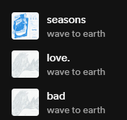
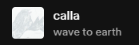
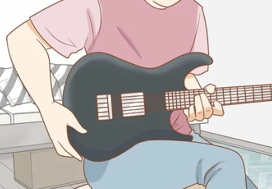
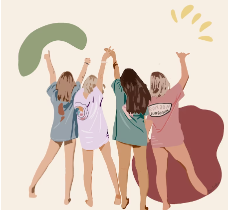

Hola!
Soy Yailin Caro
Tengo 21 años, nací el 20 de Enero del 2003 en Culiacán, Sinaloa
En esta página les hablare un poco de las cosas que me gustan
·Mi banda favorita
-Wave to earth


Ellos son wave to earth, una banda de indie rock, aunque son una banda coreana, la mayoría de sus canciones
están escritas en inglés,
la banda está formada por el vocalista y guitarrista Kim Daniel, el baterista Shin
Donggyu y el
bajista Cha Soonjong.
-Mis canciones favoritas de wave to earth son:


·Mi pasatiempo favorito
-Tocar guitarra

Mi pasatiempo favorito es tocar guitarra, tocar guitarra me ayuda a relajarme y a poner en marcha mi
creatividad,
tambien me hace sentir como una persona cool.
-Salir con mis amigas

Otros de mis pasatiempos favoritos es salir con mis amigas, me gusta salir con ellas ya que me hacen sentir
mejor y
siempre nos apoyamos mutuamente, tambien me hacen rair mucho y tengo muy buenos recuerdos con ellas.
·Aprender cosas nuevas
-Tomar fotos

Me gustan muchos las camaras y tomarle fotos y videos a las cosas que me gustan, por lo que siempre
me gusta aprender cosas nuevas relacionado con esto, como los tipos de enfoque, como editar y cosas por el
estilo.
-Hacer páginas web

Aunque solo llevemos una semana en Technolochicas me he dado cuenta que me gusta mucho hacer páginas web,
al incio me daba un poco de inseguridad entrar al summer camp porque pense que estaria demasiado complicado,
pero gracias a las personas que nos estan brindado estas seciones me han hecho sentir más segura y me gusta
mucho,
porque nos explican de una manera en la que podemos comprender mejor las cosas.
-Datos interesantes

Me gusta mucho aprender cosas nuevas e interesantes ya que me gusta hablar de cosas triviales con las personas
y siento que con datos interesantes podria entablar una buena conversación y aprender más sobre la otra persona
con las que hablo.
·Mis redes sociales